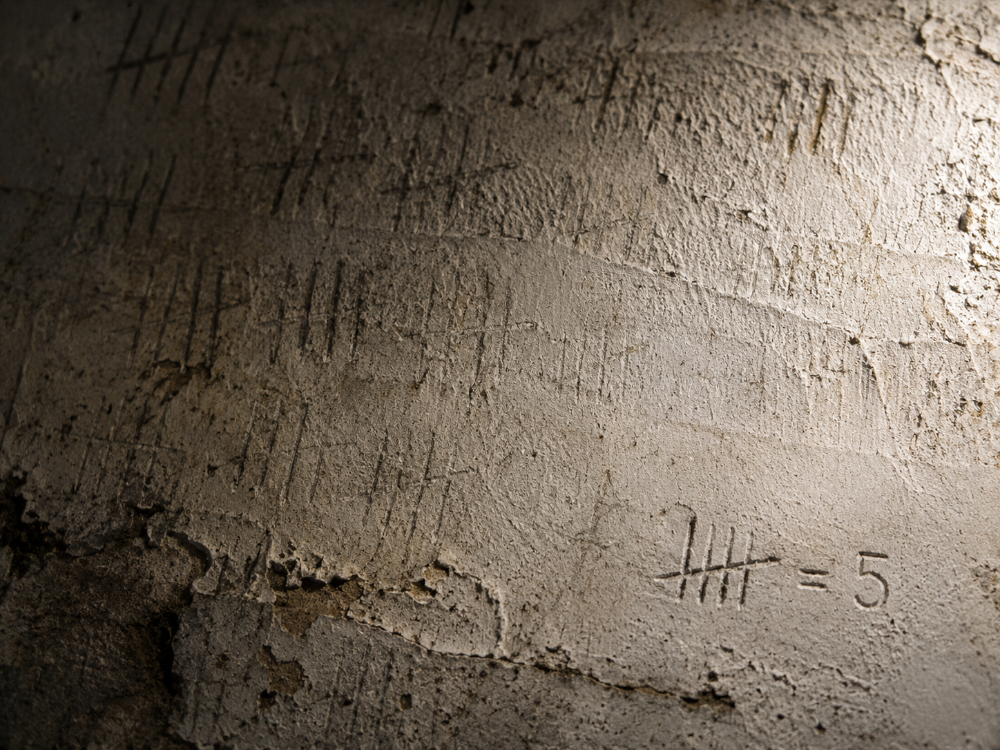

·································· · D E S C E N T · 38 / 40 · ··································

It does not triumph. It does not rule. It only keeps refusing to go out. And it leaves something behind to say it was here.
( )